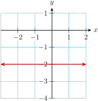

Subsection 9.1.1 Horizontal and Vertical Lines
In Section 1.5 we learned that the general form for a linear equation is
\begin{gather*}
Ax + By = C
\end{gather*}
What happens if \(A = 0\text{?}\) For example, what does the graph of
\begin{gather*}
0x + y = 3, \quad \text{ or } \quad y = 3
\end{gather*}
look like? This equation tells us that every point on the line must have \(y\)-coordinate 3, but it puts no restrictions on the \(x\)-coordinates. For example,
\begin{gather*}
(−1, 3), \quad (2, 3),\quad \text{ and } \quad (4, 3)
\end{gather*}
are all solutions of the equation. These points lie on a horizontal line, as shown below left.
On the other hand, if \(B = 0\text{,}\) we have an equation such as
\begin{gather*}
x + 0y = -2, \quad \text{ or }\quad x = -2
\end{gather*}
This equation tells us that any point with \(x\)-coordinate \(-2\) lies on the graph. For example, \((-2, 3)\) and \((-2, -1)\) are solutions. All the solutions lie on the vertical line shown above right.
Note that the horizontal line \(y = 3\) has \(y\)-intercept \((0, 3)\) but no \(x\)-intercept, and the vertical line \(x = -2\) has \(x\)-intercept \((-2, 0)\) but no \(y\)-intercept.
Horizontal and Vertical Lines.
The equation of the horizontal line passing through \((0, b)\) is
\begin{gather*}
\blert{y=b}
\end{gather*}
The equation of the vertical line passing through \((a,0)\) is
\begin{gather*}
\blert{x=a}
\end{gather*}
Example 9.1.1.
Give the equation of each line.

Solution.
This is a horizontal line with \(y\)-intercept \((0, -2)\text{,}\) so its equation is \(y = -2\text{.}\)
This is a vertical line with \(x\)-intercept \((3,0)\text{,}\) so its equation is \(x=3\text{.}\)
Now let’s compute the slopes of the two lines in the previous
Example.
\(~\alert{\text{[TK]}}\) We choose two points on the graph of
\(y=-2\text{,}\) say
\((-5, -2)\) and
\((4, -2)\text{,}\) and use these points to compute the slope.
\begin{gather*}
m=\frac{y_2-y_1}{x_2-x_1}= \frac{-2-(-2)}{4-(-5)}=\frac{0}{9}=0
\end{gather*}
The slope of the horizontal line \(y = -2\) is zero. In fact, the slope of any horizontal line is zero, because the \(y\)-coordinates of all the points on the line are equal. Thus, for any horizontal line
\begin{gather*}
m=\frac{y_2-y_1}{x_2-x_1}=\frac{0}{x_2-x_1}=0
\end{gather*}
On a vertical line, the \(x\)-coordinates of all the points are equal. For example, two points on the line \(x = 3\) are \((3, 1)\) and \((3, 6)\text{.}\) Using these points to compute the slope, we find
\begin{gather*}
m=\frac{y_2-y_1}{x_2-x_1}= \frac{6-1}{3-3}=\frac{5}{0}
\end{gather*}
which is undefined. The slope of any vertical line is undefined because the expression \(x_2-x_1\) equals zero.
Slopes of Horizontal and Vertical Lines.
The slope of a horizontal line is zero.
The slope of a vertical line is undefined.
Checkpoint 9.1.2. Practice 1.
What is the slope of any line parallel to the \(x\)-axis?
What is the slope of any line parallel to the \(y\)-axis?
Checkpoint 9.1.3. QuickCheck 1.
Decide whether each statement is true or false.
A horizontal line has no slope.
The equation of a vertical line is undefined.
A vertical line is not the graph of a function.
The graph of \(x = 6\) is a point.